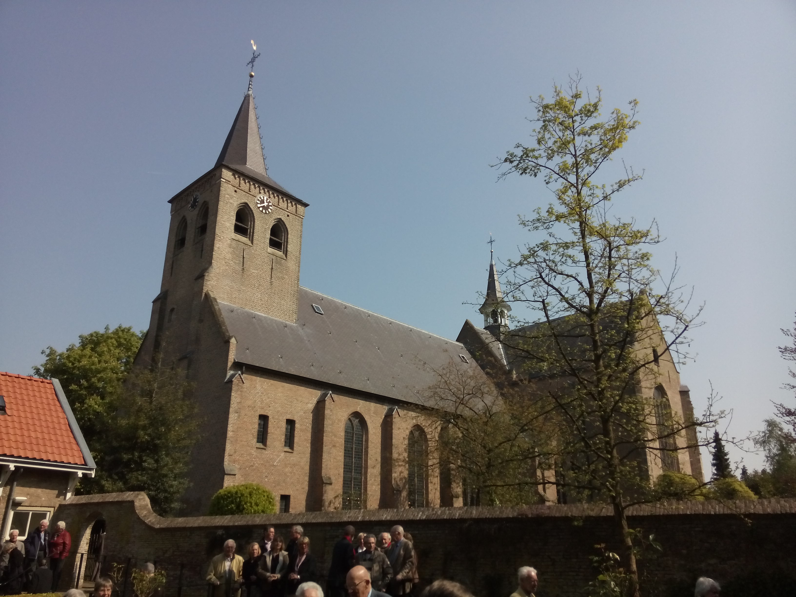

Welkom in Ginneken,
“De Protestantse Gemeente Ginneken: Een open en actieve geloofsgemeenschap midden in de wijk, verbonden door traditie en gericht op de wereld van nu.”

Het recente nieuws
Verdieping en inspiratie
Welkom op de website van de Protestantse Gemeente Ginneken
Aan allen die betrokken zijn bij de Protestantse Gemeente Ginneken: leden, gastleden, vrienden en geïnteresseerden.
Wij zijn een levendige, betrokken gemeente, midden in het hart van Ginneken en midden in het leven. Wij hebben een mooie, oecumenisch gekleurde liturgie waarin Woord én Sacrament centraal staan en die het waard is om gevierd te worden. Daarom nodigen wij u graag uit om de dienst eens bij te wonen op een zondagmorgen om 10:00 uur in onze historische Laurentiuskerk naast de Ginnekenmarkt.
Na afloop van de kerkdienst is iedereen van harte welkom voor koffie en ontmoeting in ons gemeentecentrum Mariëndal (Duivelsbruglaan 13). Elke eerste zaterdag van de maand én iedere zaterdag in juli en augustus staan de deuren van de kerk bovendien ’s middags open tijdens Open Kerk Ginneken (13:30 – 16:30 uur).
Pastoraat & Diaconaat
Omzien naar elkaar in vreugde en verdriet, huisbezoek en diaconale projecten.
Lees meer over Pastoraat →Mariëndal, Huwelijk & Uitvaart
Onze monumentale Laurentiuskerk als officiële trouwlocatie, uitvaartplek of podium.
Gebruik & Koster-Beheerder →
Uitgelicht in onze gemeente
Actuele mededelingen, concerten, vieringen en activiteiten in en rond de Laurentiuskerk.
Zondagdiensten & Rondom het Vieren
Iedere zondagmorgen om 10:00 uur komen wij samen in de Laurentiuskerk. Met uitzondering van de eerste zondag van de maand (Dienst van Woord en Gebed) vieren wij in iedere dienst het Heilig Avondmaal (Dienst van Schrift en Maaltijd).
Rondom het Vieren
Alle aspecten die ons ten dienste staan ter viering van ons geloof in de Protestantse Gemeente Ginneken.
Liturgische Identiteit
Sinds de dertiger jaren van de vorige eeuw heeft er een groei plaatsgevonden naar erediensten volgens een brede oecumenische, katholieke liturgie met gezongen en gesproken vaste onderdelen. Met uitzondering van de eerste zondag van de maand, wordt in iedere dienst het heilig avondmaal gevierd.
Ook in de inrichting van het kerkgebouw staan woord én sacrament centraal: kansel, doopvont en Avondmaalstafel vormen het centrum. De diensten geven deze gemeente die bijzondere kleur, waar velen in de loop der jaren door geboeid zijn.
Dopen & Kleine Kerk
Dopen: Er is gelegenheid om te dopen op de eerste zondag van de maand. Vóór de doop wordt een gesprek gehouden bij de ouders thuis, waarin de betekenis van de doop en de gang van zaken tijdens de doopviering worden doorgesproken. Voor een doopdienst kunt u contact opnemen met de koster.
Kleine Kerk: Op de eerste en derde zondag van de maand wordt in Mariëndal (Duivelsbruglaan 13) een dienst gehouden met de kinderen. Contact: kleinekerkginneken@outlook.com.
Cantorij & Organisten
De Cantorij: Zingt één keer per maand in de kerkdienst en op kerkelijke hoogtijdagen. Repetities vinden plaats op elke woensdag van 20:00 – 21:30 uur in Mariëndal.
Cantor-organist: dhr. G.W.G. van Spankeren (tel. 0168-472765).
Contactpersoon: mevr. Henriette van IJzeren (tel. 076-5652949).
Organisten:
1e organist: dhr. G.W.G. van Spankeren (0168-472765)
2e organist: dhr. A. Eikelboom
Goede Week, Advent & Avondgebed
Avondgebed & 40-dagentijd: In de adventstijd en veertigdagentijd voor Pasen wordt het avondgebed tezamen met de R.K. Jeruzalem-parochie gevierd. Gebedsvieringen vinden plaats in de vijf weken voorafgaande aan de Goede Week op dinsdagavond in de R.K. Laurentiuskerk (Ginnekenweg 333) om 19:00 uur.
De Goede Week: Lijdensmeditatie op maandag, dinsdag en woensdag om 19:30 uur in de Prot. Laurentiuskerk. Witte Donderdag om 19:30 uur avondmaal rond de tafel in het koor. Goede Vrijdag om 15:00 uur lijdensmeditatie. Paasnacht om 21:00 uur.
Oecumenische Adventsvieringen: Op de vier woensdagavonden vóór Kerstmis in de Prot. Laurentiuskerk van 19:00 – 19:30 uur.
Bijzondere Diensten, Huwelijk & Rouw
Bijzondere diensten: Gezamenlijk met andere protestantse gemeenten op Hemelvaartsdag, in de zomertijd en op de laatste zondag van oktober (Ontmoetingsdienst) om 10:30 uur in de Grote Kerk Breda.
Huwelijksdiensten: Het bruidspaar neemt vroegtijdig contact op met de predikant voor de liturgie en met de koster voor het bespreken van de kerk.
Rouwdiensten (Gedachtenisdienst): Bij rouwdiensten gedenken wij het unieke van die ene mens in het licht van het evangelie. De uitvaartleider neemt contact op met de koster.
Bloemendienst, Koffie & Tehuizen
Bloemendienst: Elke zondagmorgen staan er bloemen op de tafel en bij het doopvont, die als groet worden gebracht naar een gemeentelid. Voorstellen kunt u doorgeven aan een van de diakenen.
Koffiedrinken: Na de dienst in Mariëndal. Opgave vrijwilligers bij dhr. L. Nicolai (Bavelselaan 300, tel. 076-5153453).
Diensten in de tehuizen:
• Huize Ruitersbos: 1x per maand op vrijdagmiddag om 16:00 uur.
• De IJpelaar: Avondmaalsviering op nader te bepalen data.
• Kerstfeest ouderen (70+): In Mariëndal, georganiseerd door het Kerkelijk Huisbezoek.
Laatste nieuws uit onze gemeente
Bekijk hieronder de actuele nieuwsberichten, concerten, gemeenteavonden en activiteiten. Klik op een bericht om het volledige artikel te lezen.
Nieuwsarchief Protestantse Gemeente Ginneken
Doorzoek eerdere artikelen en activiteiten uit onze gemeente.
| Datum | Titel | Samenvatting | Actie |
|---|
Verdieping: Gedichten & Verhalen
Poëzie, overwegingen, artikelen over de symboliek in onze Laurentiuskerk ("Schatten van Laurentius"), lezingen en vorming. Kopij kan worden aangeleverd bij webredacteur dhr. L. Nicolai.
Gedichten, Verhalen & Schatten van Laurentius
Rondom het Leren: Catechese, Kringen & Cursussen
Basiscatechese & Belijdeniscatechese
Basiscatechese: Op aanvraag wordt er basiscatechese gegeven voor kinderen van 10, 11 en 12 jaar. Contactpersoon: u kunt contact opnemen met de koster of predikant.
Belijdeniscatechese: Mensen die ongeacht welke leeftijd belijdeniscatechese willen volgen, zijn van harte welkom.
Kringwerk & Oecumenische Kring Bavel
Actuele informatie over gespreksgroepen en lezingen is te vinden op de pagina Nieuws.
Oecumenische kring Bavel: Komt 1x per 6 weken op donderdagavond om 20:00 uur bij elkaar in het parochiecentrum te Bavel.
Contactpersoon: Wim Eland, tel. 076-5613598.
Theologische Vorming Gemeenteleden (TVG)
Vanuit de PKN worden driejarige cursussen Theologische Vorming Gemeenteleden georganiseerd in Noord-Brabant (o.a. Aalburg, 's-Hertogenbosch en Eindhoven).
Toelating & Kosten: Iedereen met belangstelling voor theologie kan deelnemen zonder vooropleidingseisen. Kosten: € 180 – € 250 per jaar (plus ca. € 45 boeken). Meer info via protestantsekerk.nl.
Kind en Jeugd — De Kleine Kerk & Tienergroep
De jeugd heeft de toekomst! De kerk is voor iedereen, jong en oud. Ontdek hier alles over De Kleine Kerk (kindernevendienst tijdens de zondagdienst), de crèche en de maandelijkse vieringen voor tieners.
De Kleine Kerk (Kindernevendienst)
Omdat we zoveel leuke dingen op het programma hebben staan, hopen we dat jullie allemaal gezellig elke keer naar De Kleine Kerk komen. Neem gerust een vriendje of vriendinnetje mee!
- Door wie: Brigitte, Hanneke, Marguerite en Nynke
- Voor wie: Kinderen vanaf 4 jaar t/m groep 8
- Wanneer: Tijdens de dienst op de 1e en 3e zondag van de maand in Mariëndal (Duivelsbruglaan 13), plus de periode voor Pasen en Kerstmis
- Wat: Bijbelverhalen, knutselactiviteiten en projecten rondom Pasen, Kerstmis, Hemelvaart en Pinksteren
Contact: kleinekerkginneken@outlook.com
Jeugd & Tieners
Voor de jeugd en tieners van de middelbare school is er een speciale groep gevormd. Zij komen bij elkaar op de eerste zondag van de maand voor een eigen viering en ontmoeting, afwisselend in de Markuskerk, Johanneskerk of in onze eigen Laurentiuskerk, onder leiding van een jeugdouderling.
Lijkt het je leuk om mee te doen of te helpen bij onze jeugdactiviteiten? Spreek gerust één van de leiding aan na de kerkdienst!
Crèche op Zondagmorgen
Voor de allerkleinsten (kinderen t/m 4 jaar) streven wij naar openstelling van de crèche in Mariëndal op zondagmorgen van 9:30 – 11:30 uur, zodat ouders rustig de kerkdienst kunnen bijwonen.
Aanmelden of vragen over de crèche: neem contact op met Marije Kat of met koster-beheerder Ingeborg Haspels.
Berichten & Projecten van De Kleine Kerk
Publiciteit: Kerknieuws, Laurentiusbrief & Foto's
Blijf betrokken bij het wel en wee van de Protestantse Gemeente Ginneken via ons kerkblad Kerknieuws, de maandelijkse digitale Laurentiusbrief en onze fotoalbums.
Kerknieuws Ginneken
Ons gemeenteblad Kerknieuws Ginneken verschijnt 9 keer per jaar met uitgebreide achtergronden, pastorale berichten, kerkdiensten en gemeentenieuws.
| Redactie | Dhr. B. van Halem & Mevr. H. van IJzeren-ten Kley |
|---|---|
| Postadres | Duivelsbruglaan 11, 4835 JD Breda |
| E-mail kopij | bvh@vanhalem.nl |
| Abonnement | € 25,00 – € 27,50 per jaar (= kostprijs) IBAN: NL72 INGB 0009 0241 86 |
De Laurentiusbrief
De digitale Laurentius Nieuwsbrief verschijnt sinds september 2022 één keer per maand voor leden, gastleden en vrienden van de Protestantse Gemeente Ginneken.
Kopij aanleveren: Heeft u een bericht of activiteit (max. ca. 200 woorden)? Lever uw bijdrage graag vóór de 15e van de maand in.
Stuur een e-mail naar pgglaurentius@gmail.com
Foto's & Overige Kanalen
Bekijk onze 14 uitgebreide fotoalbums (346 foto's) van kerkdiensten, Open Kerk, monumenten en gemeenteactiviteiten.
Webredacteur & Webmaster:
Dhr. Lennart Nicolai (lnicolai@ziggo.nl)
Kerkblad S’Amen (PG Breda):
Digitaal aanvragen via webcoordinator@protestantsegemeentebreda.nl
Foto's van onze gemeente (14 Fotoalbums)
Bekijk hier de 14 fotoalbums (346 foto's) van onze kerkelijke activiteiten, de Laurentiuskerk, Open Kerk, Kunst en vieringen. Klik op een album om de foto's en diavoorstelling te openen.
Pastoraat — Omzien naar elkaar
Wat het pastoraat voor u kan betekenen en hoe ouderlingen en predikant samen zorgen voor persoonlijke aandacht en begeleiding bij levens- en geloofsvragen.
Wat het Pastoraat voor u kan betekenen
Ouderlingen zijn samen met de predikant verantwoordelijk voor de pastorale zorg. Daartoe behoort het bezoeken van de leden van de gemeente. Een gemeentelid dat graag met de predikant of een van de ouderlingen een gesprek wil, kan dat kenbaar maken na de kerkdienst of via de telefoon.
Redenen voor een gesprek kunnen zijn: vragen of gedachten die leven met betrekking tot het reilen en zeilen van de gemeente tot en met levensvragen van allerlei aard in relatie tot het geloof. Daarnaast beschouwen zij het als hun taak waar mogelijk bij te dragen aan toerusting van de gemeente bij het vervullen van de pastorale en de missionaire taken van de gemeente als zodanig en ieder gemeentelid afzonderlijk.
Zorg voor de gemeenschap
Ouderlingen hebben vooral ook de zorg voor de gemeente als gemeenschap en zij proberen mensen te motiveren om zich met de gemeente verbonden te blijven voelen. Zij dragen in het bijzonder medeverantwoordelijkheid voor de bediening van het Woord en de sacramenten. Dat betekent hun ambtelijke tegenwoordigheid in de kerkdiensten.
De ouderlingen en de predikant vergaderen gemiddeld eenmaal per maand.
Predikant dr. G.P.Th. Bosma: pgg.predikant@gmail.com
Scriba mevr. W. Luijk: pgg.scribaat@gmail.com
Diaconaat, ZWO & Kerkelijk Huisbezoek
De Diaconie houdt zich bezig met zorg en aandacht voor wie dat nodig hebben, dichtbij in Breda en wereldwijd via Kerk in Actie en ZWO.
Breda Breed: Vrienden van de Laurentiuskerk & Kerken in Breda
Verbonden met het Ginneken en de stad Breda: lees hier over de Stichting Vrienden van de Protestantse Laurentiuskerk en onze samenwerking met andere kerkgemeenten in Breda.
Informatie over andere kerkgemeenten in Breda
Protestantse Gemeente Breda & Zusterkerken
Er is een regelmatig overleg en nauwe samenwerking tussen de Protestantse Gemeente Ginneken en de Protestantse Gemeente Breda.
Scriba Centrale Kerkenraad: dhr. A. Walet
Kopij kerkblad S'amen: samen@protestantsegemeentebreda.nl
Website: www.protestantsegemeentebreda.nl ↗
Andere Protestantse & Lutherse kerkgemeenten in Breda:
-
Lucaskerk (Wijkgemeente NoorderBeemden) ↗
Tweeschaar 125, 4822 AS Breda (tel. 076-542 24 33) • Aanvang zondagdienst: 10:45 uur -
Johanneskerk (Wijkgemeente Midden/Zuid) ↗
Dreef 5, 4813 ED Breda / Princenhage (tel. 076-521 05 45) • Aanvang zondagdienst: 10:00 uur -
Markuskerk ↗
Hooghout 96, 4817 ED Breda (tel. 076-514 00 80) • Aanvang: 10:00 uur
Predikant: Ds. T. van Prooijen (Arenberglaan 168, tel. 076-542 33 34, tonvanprooijen@gmail.com) -
Evangelisch-Lutherse Gemeente Breda ↗
Veemarktstraat 11 / Stadserf 3, 4811 ZB Breda • Aanvang: 10:30 uur (Scriba: dhr. J.N. Dijkshoorn)
R.K. Buurparochie & Raad van Kerken Breda
R.K. Parochie van de Heilige Familie (parochieheiligefamilie.nl ↗):
- Pastor M. Kurstjens — Mariakerk, Mariaplein 1, Breda (tel. 076-5652260)
- Pastor P. Derks — Petrus en Pauluskapel, Gr. Hendrik III-plein 28 (tel. 076-5210656)
- Pastoor Lars Peetam — R.K. Laurentiuskerk, Ginnekenweg 335, Breda (tel. 076-5655433)
- Sint Laurentiuskerk Ulvenhout (Dorpsstraat 42, tel. 076-5612308): mw. Marjan Luijben
- Bavel (Heilige Maria Hemelvaart kerk, Kloosterstraat 3, tel. 0161-434279): Pastor P. Derks — regelmatig oecumenische diensten
Raad van Kerken Breda:
Elke dinsdag is er om 12:30 uur een middaggebed in de Grote Kerk aan de Markt in Breda. Secretaris: mw. P. Kemna-Wilms. Website: www.raadvankerkenbreda.nl ↗
Oecumenische doop- en huwelijksviering:
Het komt hier in het Zuiden regelmatig voor dat er om een oecumenische huwelijks- of doopviering wordt gevraagd. De dienst wordt dan samen met de predikant en een pastor voorbereid. Neem hiervoor contact op met de koster en de pastor.
Organisatie van de Protestantse Gemeente Ginneken
Overzicht van het bestuur en beheer van onze gemeente: ANBI, de Kerkenraad, het College van Kerkrentmeesters, Koster/Beheerder, Veilige Kerk, Kerk en Uitvaart en het Kerkelijk Bureau.
Algemeen Nut Beogende Instelling (ANBI)
Bekijk de fiscale ANBI-gegevens, RSIN-nummers, beleidsplannen en staten van baten en lasten van zowel de Kerk als de Diaconie.
De Kerkenraad
Het bestuur van de kerkelijke gemeente ligt bij de kerkenraad (bestaande uit predikant, voorzitter/preses, scriba, ouderlingen en diakenen).
| Dominee (Predikant) | dr. G.P.Th. Bosma pgg.predikant@gmail.com |
|---|---|
| Voorzitter (Preses) | Dhr. Anne C. Tjepkema ac.tjepkema@planet.nl |
| Scriba Kerkenraad | Mevr. W. Luijk pgg.scribaat@gmail.com |
| Ouderlingen | Verantwoordelijk voor de pastorale zorg, gemeenteopbouw en ambtelijke aanwezigheid tijdens de erediensten. Contact via scribaat (pgg.scribaat@gmail.com). Meer over Pastoraat → |
| Diakenen | College van Diakenen o.l.v. voorzitter Mevr. Diny Koopmanschap, mevr. C. van Wijk, mevr. Els Hagemans-de Vroomen & mevr. B.C.M. Koopmanschap (ZWO). Contact: pgg.diaconie@gmail.com • Naar Diaconaat → |
College van Kerkrentmeesters
Het College van Kerkrentmeesters verzorgt het verwerven en beheren van geldmiddelen, gebouwen, terreinen, administraties en begraafplaatsen ten dienste van de kerk.
| Voorzitter | Vacature (waarneming via het college) |
|---|---|
| Secretaris | Dhr. F. Wunschmann pgg.kerkrentmeesters@gmail.com |
| Ledenadministratie | Dhr. H. van Dalen hpdalen@ziggo.nl |
| Bijdragenadministratie (Kerkbalans) | Mevr. Ingrid Nuiten (ingridnuiten@hotmail.com) IBAN ING: NL50 INGB 0001 0790 21 IBAN ABN AMRO: NL27 ABNA 0109 6381 07 (Ook voor giften aan het Bloemenfonds & Restauratiefonds) |
| Begraafplaatsen | Dhr. B. de Geus (basengreetdegeus@gmail.com) Beheer van Kerkhof Oud-Ginneken en Begraafplaats De Bieberg (ook voor niet-gemeenteleden; info Zuylen: 076-521 94 53). |
Koster / Beheerder & Gebruik Gebouwen
Mevr. I.T. (Ingeborg) Haspels
Tel: 06-52148933
E-mail: pgg.koster@gmail.com
De koster-beheerder is het eerste aanspreekpunt voor alle activiteiten en reserveringen in de Laurentiuskerk (Duivelsbruglaan 1), gemeentecentrum Mariëndal (Duivelsbruglaan 13) en het Romenyhuis, waaronder burgerlijke huwelijken ("huis van de gemeente") en zaalgebruik (€ 130/dagdeel).
Kerk en Uitvaart
Wat te doen bij overlijden? Wanneer u voor een (kerkelijke of niet-kerkelijke) uitvaart in de Laurentiuskerk kiest, is het van belang dat de uitvaartbegeleider eerst contact opneemt met koster Ingeborg Haspels (06-52148933) voordat definitieve afspraken worden gemaakt.
Via haar worden de kerk en Mariëndal vastgelegd en wordt nagegaan of predikant en organist beschikbaar zijn voor een waardige, troostende gedachtenisdienst.
Kerkelijk Bureau & Privacy
Mevr. A. van Halem
Adres: Duivelsbruglaan 11, 4835 JD Breda
Postbus 4648, 4803 EP Breda
E-mail: pgg.kerkelijkbureau@gmail.com
Privacyverklaring: Wij verwerken persoonsgegevens uitsluitend zorgvuldig voor gemeentelijke communicatie en delen deze nooit met derden zonder wettelijke plicht. Verzoeken tot inzage of correctie kunt u richten aan het Kerkelijk Bureau.
Veilige Kerk & Gedragscode
De Protestantse Kerk in Nederland wil een veilige kerk zijn, een plaats waar mensen in vrijheid en vertrouwen samenkomen om hun geloof gestalte te geven. Als Protestantse Gemeente Ginneken onderschrijven wij dit en daarom gebruiken wij onderstaande gedragscode voor alle vrijwilligers op elk terrein van het kerkenwerk.
1. Veilige omgeving: We werken samen aan een omgeving en een sfeer waarbinnen iedereen zich veilig en gerespecteerd voelt en vrijuit het geloof kan beleven.
2. Respect: We respecteren elkaar en anderen. We benaderen de ander niet op een manier die haar of hem in waardigheid en integriteit aantast. Dit geldt in het bijzonder voor minderjarigen en andere kwetsbaren.
3. Geheimhouding: We gaan zorgvuldig om met vertrouwelijke (waaronder persoonlijke) informatie of gegevens van anderen, waaronder alles waarop onze geheimhoudingsplicht betrekking heeft.
4. Persoonlijke integriteit: We respecteren de rechten van de ander. We berokkenen de ander geen schade en vermijden fysiek of mentaal geweld.
5. Lichamelijke integriteit: We respecteren elkaars lichamelijke integriteit en zijn terughoudend in fysiek contact.
6. Privacy: We respecteren de privacy van de ander en mengen ons niet in het privéleven van mensen dan voor het uitoefenen van de functie strikt noodzakelijk is.
7. Taalgebruik: Ons taalgebruik is respectvol. We stellen geen ongepaste vragen, maken geen ongewenste opmerkingen en roddelen niet.
8. Financiële belangen: We vermijden elke vorm van belangenverstrengeling, in het bijzonder op financieel terrein. Met giften en eigendommen gaan we integer om.
9. Seksueel misbruik: We volgen in geval van (seksueel) misbruik of vermoedens daarvan het Protocol van de PKN.
10. Een cultuur van openheid: We zijn alert en spreken elkaar aan wanneer we signalen opvangen of situaties van ongewenst gedrag meemaken.
Vertrouwenspersonen Protestantse Gemeente Ginneken
Wanneer u aarzelt over de aanvaardbaarheid van gedrag van uzelf of een ander, kunt u vertrouwelijk contact opnemen met een van onze vertrouwenspersonen:
ANBI-gegevens: Kerk & Diaconie
Zowel de Protestantse Gemeente Ginneken als de Diaconie zijn door de Belastingdienst geregistreerd als ANBI. Giften en schenkingen zijn daardoor aftrekbaar en vrijgesteld van schenk- en erfbelasting.
ANBI-gegevens Protestantse Gemeente te Ginneken
| Naam ANBI | Protestantse gemeente te Ginneken |
|---|---|
| RSIN / Fiscaal nummer | 002650447 |
| Kamer van Koophandel | 50858548 |
| pgg.kerkelijkbureau@gmail.com | |
| Bezoekadres | Duivelsbruglaan 1, 4835 JD Breda |
| Postadres | Postbus 4648, 4803 EP Breda |
Samenstelling Bestuur & Doelstelling
Het bestuur van de kerkelijke gemeente ligt bij de kerkenraad (12 leden, gekozen door en uit de leden). Het College van Kerkrentmeesters telt 5 leden en beheert de financiële middelen en gebouwen. Leden van kerkenraden, colleges en commissies ontvangen geen vergoeding voor hun werkzaamheden. De beloning van de predikant en medewerkers is geregeld in de Generale Regelingen van de PKN.
Uitgeoefende activiteiten
- Kerkdiensten op zon- en feestdagen, bij huwelijken en overlijden
- Pastorale zorg aan gemeenteleden
- Exploitatie en onderhoud van gebouwen en terreinen van de PG Ginneken
- Deelname aan ZWO i.s.m. Protestantse Kerk Breda & steun aan lokale/nationale stichtingen
- Samenwerking met het (zorg)wijkteam Ginneken
- Deelname aan Open Monumentendag en “Rondje Open Kerk”
- Beschikbaar stellen van zalencomplex voor vergaderingen, koren en als trouwlocatie
- Exploitatie van begraafplaats De Bieberg en Kerkhof Oud Ginneken
- Verhuur terrein aan Scouting Ginneken
Staat van Baten en Lasten (Kerk)
Bekijk hieronder het financiële overzicht van de Protestantse Gemeente Ginneken (klik op de afbeelding om te vergroten):


Geschiedenis van de Laurentiuskerk & Gemeente
De historie van het kerkgebouw aan de Ginnekenmarkt, het ontstaan van onze zelfstandige protestantse gemeente in 1641 en de groei van onze liturgische identiteit.
Historie van zeven eeuwen
Het kerkgebouw is in het jaar 1316 als parochiekerk in gebruik genomen, gewijd aan de Heilige Laurentius. Aanvankelijk was de kerk driebeukig; nadat het schip in de Tachtigjarige Oorlog was opgeblazen, werd de kerk in 1631 door pastoor Van Biestraten herbouwd met één lage middenbeuk.
In 1939 werd een grondige restauratie voltooid onder grote invloed van de oecumenische visie van de kerkenraad en ds. B. ter Haar Romeny, met een zichtbare liturgische indeling. Na oorlogsschade in oktober 1944 werd de kerk in 1947 hersteld en in 1998 opnieuw uitvoerig gerestaureerd.
Ruim 380 jaar zelfstandige gemeente
Op 13 maart 1641 werd een verzoek van de Hervormde Gemeente van Ginneken om een eigen predikant te mogen beroepen goedgekeurd door de Raad van State. Op zaterdag 27 juni 1648 werd het kerkgebouw officieel toevertrouwd aan de hervormden.
In mei 2007 kreeg de gemeente haar huidige naam binnen de PKN: Protestantse Gemeente Ginneken.
Honingboom Oud Ginneken: Bekijk ook de BredaNu-reportage op YouTube ↗ over de bijzondere honingboom op begraafplaats Oud Ginneken.
De diaken Laurentius
De diaken Laurentius weigerde de schatten van de kerk (heilige vaten en schriftrollen) uit te leveren aan de Romeinse keizer. Hij trad met de armen in zijn gemeente naar buiten — volgens hem de échte schatten van de kerk.
Laurentius werd daarop als martelaar ter dood gebracht op een rooster. Daarom wordt hij afgebeeld met een rooster én met een palmtak als teken van overwinning.
Zelfs Napoleon kwam naar het Ginneken om zich te bemoeien met de strijd om de Laurentiuskerk
1798: De Franse tijd en de 'Graauwmans-documenten'
Toen bevelhebber Pichegru in januari 1795 ons land binnentrok, ontstonden er voor katholieken wettelijke mogelijkheden om kerken terug te vorderen. Op 19 juni 1798 diende een aantal Ginnekense katholieken een verzoek in voor teruggave van de kerk aan de Ginnekenmarkt (destijds getaxeerd op ruim ƒ 11.000,-). Predikant Ds. J.C. Hirschig vroeg om uitstel.
Een zevental katholieke inwoners uit Ulvenhout (C. Graauwmans, C. Laureijsen, J. van Hooijdonck, A. Meeren, C.A. Rombouts, J. van Miert en H. van Dijk) liet echter op 15 juni 1798 weten af te zien van enige aanspraak op de kerk in het Ginneken — mogelijk uit vrees voor gevolgen voor hun eigen kerk in Ulvenhout. Dankzij deze 'Graauwmans-fractie' behield de Hervormde Gemeente haar kerkgebouw.
8 juli 1803 & het bezoek van Koning Lodewijk Napoleon (1809)
Op 8 juli 1803 klommen timmerman Henk Vermeulen en herbergier Anton Kuijpers de kerk binnen en vergrendelden de zijdeur met spieën. De Drossaard van de Hoge Vierschaar in Breda oordeelde later dat behalve kosteres Catharina Schellekens vrijwel iedereen fout had gehandeld. In 1809 bracht Koning Lodewijk Napoleon een bliksembezoek aan het Ginneken; de kerk van Bavel werd toen teruggegeven aan de katholieken, maar de Ginnekense kerk bleef hervormd.
1830 – 1902: Belgische Opstand en de bouw van de nieuwe RK Laurentiuskerk
Tijdens de Belgische Opstand in 1830 werden wegens cellentekort tijdelijk Belgen opgesloten in de kerktoren aan de Ginnekenmarkt. Na een laatste afgewezen terugvorderingsverzoek in 1834 (onder Ds. Roscam Abbing) bouwden de Ginnekense katholieken in 1843 een eigen kerk aan de Ginnekenweg, die in 1902 werd vervangen door de huidige kerk van architect Jos Cuypers.
Ds. B. ter Haar Romeny & de ramen van Charles Eyck (1964–1969)
Vanaf 1916 leidde Ds. B. ter Haar Romeny als grote pionier de restauratie van de kerk en de aankoop van Huize 'Mariëndal' (1933) en begraafplaats De Bieberg. Na zware oorlogsschade in WOII werd de kerk prachtig hersteld. In de jaren zestig zorgde ds. A.C.D. van den Bosch voor de plaatsing van vier gebrandschilderde ramen van prof. Charles Eyck (1897–1983): "De overwinning op de dood" (1964), het Doopraam (1965), het grote Scheppingsraam (1966) en "Het Nieuwe Jeruzalem" (1969).
Verhuur Mariëndal, Huwelijk & Service
Mogelijkheden voor het huren van gemeentecentrum Mariëndal en de Laurentiuskerk, het sluiten van een burgerlijk huwelijk, kerkelijke uitvaarten en al onze vormen van gemeenteservice.
Verhuur Gemeentecentrum Mariëndal (Tarief 2026)
Elke zondag vóór en na de kerkdienst wordt Mariëndal (Duivelsbruglaan 13) gebruikt door de eigen gemeente. Gedurende de week zijn er ruimschoots mogelijkheden om Mariëndal te huren voor bijvoorbeeld concerten, conferenties, lezingen, recepties en diploma-uitreikingen.
• Ochtend: tot 12:00 uur
• Middag: van 12:30 – 17:30 uur
• Avond: van 18:00 – 23:00 uur
- De koster kan warme en/of koude dranken, broodjes e.d. verzorgen.
- In overleg met de koster kunt u gebruikmaken van WiFi.
- Als huurder heeft u het recht om maximaal 2 auto's op het terrein te parkeren (overige auto's op het Schoolakkerplein).
- Reserveren: Neem contact op met koster-beheerder Ingeborg Haspels via 06-52148933 of pgg.koster@gmail.com.
Burgerlijk Huwelijk in de Laurentiuskerk
In het bruisend hart van Ginneken is het sinds 1 januari 2013 mogelijk om uw burgerlijk huwelijk c.q. geregistreerd partnerschap in de Protestantse Laurentiuskerk aan de Duivelsbruglaan 1 te laten voltrekken.
Deze locatie is door de gemeenteraad van Breda aangemerkt als "huis van de gemeente", wat betekent dat in de kerk én op het gehele terrein van de kerk — inclusief de consistoriekamer en de tuinen — een burgerlijk huwelijk kan en mag worden voltrokken.
De Protestantse Gemeente zorgt voor de locatie en de gemeente Breda voor de ambtenaar van de burgerlijke stand. Voor verdere informatie en het formulier voor de optieovereenkomst kunt u contact opnemen met de koster (pgg.koster@gmail.com).
Kerk en Uitvaart
Wat te doen bij overlijden? Wanneer u voor een (kerkelijke of niet-kerkelijke) uitvaart in de Laurentiuskerk kiest, is het van belang dat de uitvaartbegeleider eerst contact opneemt met koster Ingeborg Haspels (06-52148933) voordat harde afspraken worden gemaakt.
Via haar worden de kerk en Mariëndal vastgelegd en wordt nagegaan of predikant en organist beschikbaar zijn. Met de predikant bespreekt u inhoud en vorm van een betekenisvolle en troostende afscheidsbijeenkomst. Ook het huren van het kerkgebouw/Mariëndal voor een niet-kerkelijk afscheid (zonder predikant) is in overleg mogelijk.
Open Kerk Ginneken
Elke eerste zaterdag van de maand en iedere zaterdag in juli en augustus is de kerk ’s middags open voor bezoekers. Ook gaan de deuren open tijdens evenementen zoals Bruisend Ginneken, de Ginnekense kerstmarkt en Open Monumentendag.
Openingstijden:
• April t/m december: 13:30 – 16:30 uur
• Januari, februari en maart: 13:30 – 16:00 uur
(Onder voorbehoud van uitvaart- of huwelijksdiensten.)
Crèche, Koffie, Lunch & KerkWebRadio
Crèche op zondag: Streven naar openstelling van 9:30 – 11:30 uur voor kinderen t/m 4 jaar. Aanmelden als vrijwilliger bij Marije Kat.
Koffiedrinken na de dienst: Elke zondag in Mariëndal. Opgave vrijwilligers bij dhr. L. Nicolai.
Lunch na de dienst: Elke laatste zondag van de maand (behalve in de zomer). Opgeven bij Diny Koopmanschap of Ingeborg Haspels.
KerkWebRadio: Volg de kerkdienst thuis via kerkomroep.nl. De koster helpt u graag verder.
Contact met de Protestantse Gemeente Ginneken
Alle contactpersonen, e-mailadressen en locaties van onze kerkelijke gemeente overzichtelijk bij elkaar.
Moderamen & Koster
| Predikant | dr. G.P.Th. Bosma pgg.predikant@gmail.com |
|---|---|
| Preses | Dhr. Anne C. Tjepkema ac.tjepkema@planet.nl |
| Scriba | Mevr. W. Luijk pgg.scribaat@gmail.com |
| Koster-Beheerder | Mevr. I.T. (Ingeborg) Haspels Tel: 06-52148933 pgg.koster@gmail.com |
De koster-beheerder is het aanspreekpunt voor alle activiteiten en reserveringen in het kerkgebouw, Mariëndal en het Romenyhuis (reguliere diensten, rouw- en trouwdiensten en verhuur).
Kerkrentmeesters & Kerkelijk Bureau
| Voorzitter KRM | Vacature |
|---|---|
| Secretaris KRM | Dhr. F. Wunschmann pgg.kerkrentmeesters@gmail.com |
| Ledenadministratie | Dhr. H. van Dalen hpdalen@ziggo.nl |
| Kerkbalans | Mevr. Ingrid Nuiten ingridnuiten@hotmail.com |
| Begraafplaatsen | Dhr. B. de Geus basengreetdegeus@gmail.com |
| Kerkelijk Bureau | Mevr. A. van Halem Duivelsbruglaan 11, 4835 JD Breda pgg.kerkelijkbureau@gmail.com |
Diaconie & Bezoekadressen
| Voorzitter Diaconie | Mevr. D. Koopmanschap pgg.diaconie@gmail.com |
|---|---|
| KerkWebRadio | Mevr. I.T. Haspels pgg.koster@gmail.com |
| Laurentiuskerk | Duivelsbruglaan 1 4835 JD Breda |
| Postadres Kerk & Romenyhuis | Duivelsbruglaan 11 4835 JD Breda |
| Mariëndal (Gemeentecentrum) | Duivelsbruglaan 13 4835 JD Breda |
Locatie van de kerk & Route naar de Laurentiuskerk
Gelegen aan de Duivelsbruglaan 1–13 naast de Ginnekenmarkt in Breda-Zuid.